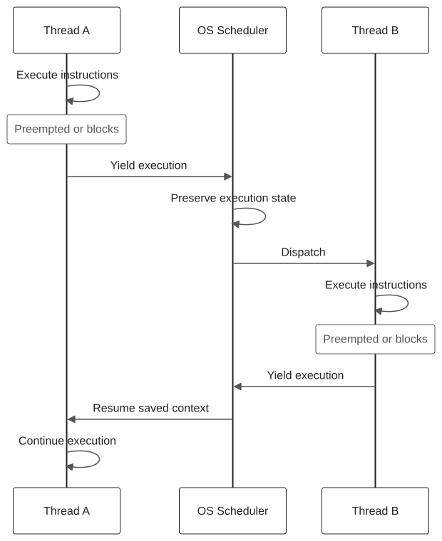

The operating system schedules runnable threads across available CPU cores.
CPU scheduler
Its responsibilities include selecting runnable threads, assigning CPU time, enforcing priorities and scheduling policies, and balancing tasks across cores.
Common scheduling algorithms include:
| Algorithm | Description |
|---|---|
| FCFS | First-Come, First-Served |
| SJF | Shortest Job First |
| SRTF | Preemptive Shortest Remaining Time First |
| Round Robin | Each task receives a CPU time quantum |
| Priority Scheduling | Higher-priority tasks are favored |
| Multilevel Feedback Queue | Dynamically adjusts task scheduling queues/priorities |
| Fair Scheduling | Attempts to distribute CPU time fairly |
Real operating systems use more sophisticated scheduling policies, including fairness and real-time mechanisms.
Context switching
Context switching is the process of suspending one thread and resuming another.
